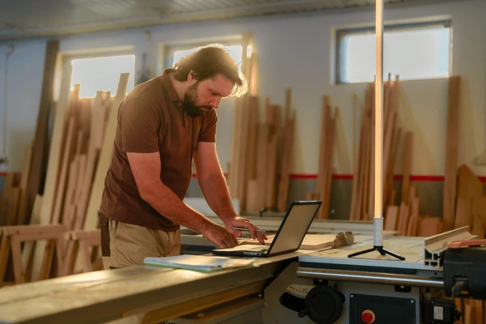

OpifexLign
¿Tu talento se queda encerrado en el taller?
Muchos ebanistas dependen exclusivamente del "boca a boca", un método lento e impredecible en la era digital. En OpefixLign eliminamos esa incertidumbre. Somos el puente entre tu maestría con la madera y los clientes que buscan exclusividad, garantizando que tu negocio tenga la visibilidad que necesita para crecer.
OpefixLign es un ecosistema digital creado para unir la maestría artesanal con la demanda del mercado moderno. Funcionamos como un punto de encuentro donde los ebanistas transforman su taller en una vitrina global, permitiéndoles comercializar desde piezas exclusivas a medida hasta mobiliario funcional listo para armar. Facilitamos que el talento local sea descubierto por clientes que buscan calidad, diseño y un contacto directo con el creado.

| Ebanista | Usuario |
|---|---|
| Publicar cotizaciones: Crear ofertas estándar sobre proyectos comunes (ej. "Cocinas en porcelanato") para captar clientes rápido. | Catálogo: Navegar entre productos listos para entrega y servicios de fabricación personalizada. |
| Tienda de productos: Vender directamente muebles armables o piezas genéricas ya fabricadas. | Búsqueda inteligente: Filtros avanzados para encontrar exactamente el estilo, material o precio deseado. |
| Perfil profesional: Gestionar un espacio propio para recibir solicitudes de contacto y nuevos proyectos. | Contacto directo: Enviar solicitudes personalizadas a los perfiles de los ebanistas con un solo clic. |